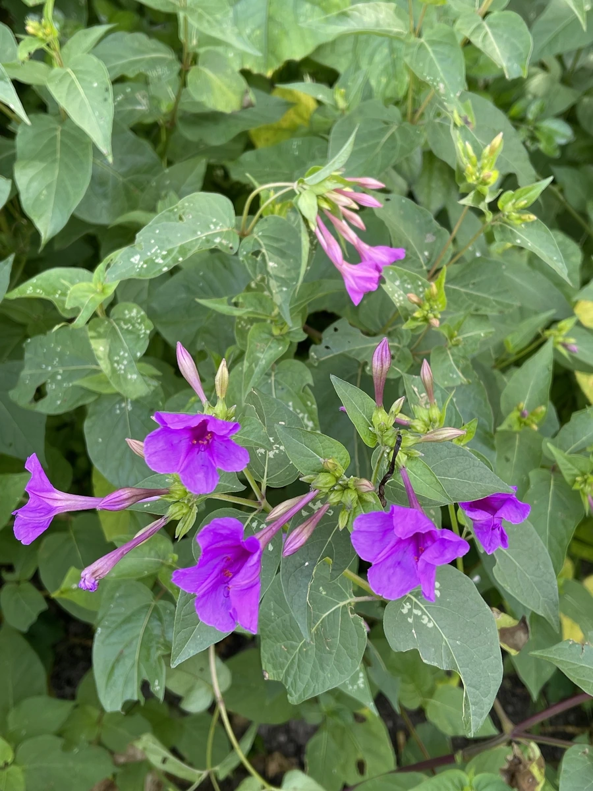

花卉与草本 · 植物界
紫茉莉 Mirabilis jalapa

紫茉莉科紫茉莉属一年生草本，花午后至傍晚开放、清晨闭合，种子黑褐色似地雷，是庭院里常见的乡土花卉。
- 分类
- 门被子植物门纲木兰纲目石竹目科紫茉莉科属紫茉莉属
- 栖息环境
- 庭院、路旁与村边，喜温暖湿润、阳光充足
- 地理分布
- 原产热带美洲；中国各地普遍栽培并常见逸生
- 保护级别
- 暂无评估；栽培与逸生植物，不涉及保护等级
物种志
紫茉莉为紫茉莉科紫茉莉属一年生草本，高五十至一百厘米，茎直立、多分枝，节部膨大。叶片对生，卵形至心脏形，全缘，表面深绿。花单生于叶腋或枝顶，花冠漏斗状，边缘五裂，颜色有紫红、黄、白及复色，花期六月至十月，午后开放、清晨闭合；果实球形，成熟时黑色、表面有皱纹，形似小地雷，果期八月至十一月。
紫茉莉原产热带美洲，中国各地普遍栽培，常逸生于庭院、路旁和村边。它喜温暖湿润和充足阳光，也耐半阴，对土壤要求不严，自播能力强。花在傍晚开放，香气清淡，是夏秋庭院里常见的乡土花卉；种子含淀粉，但不宜食用；根和叶在民间入药，有清热解毒之效。因种子形似地雷，孩子们常称它为地雷花。
形态与习性
- 株高50–100 cm，茎多分枝
- 花期6–10 月，午后开放
- 果期8–11 月，种子黑色似地雷
- 光照喜光，也耐半阴
- 水分喜湿润，耐短期干旱
- 土壤疏松壤土，适应性强
- 主要用途庭院观赏，根叶入药
趣味知识
- 紫茉莉的花在下午四五点开放、清晨闭合，因此被称为晚饭花。
- 它的种子黑色、表面有皱纹，形状像一枚微型地雷。
- 同一株紫茉莉上常能开出不同颜色的花，甚至一朵花上出现复色。